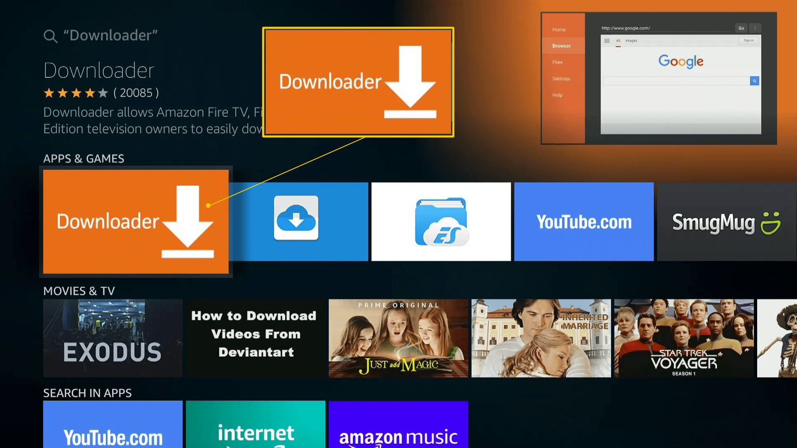
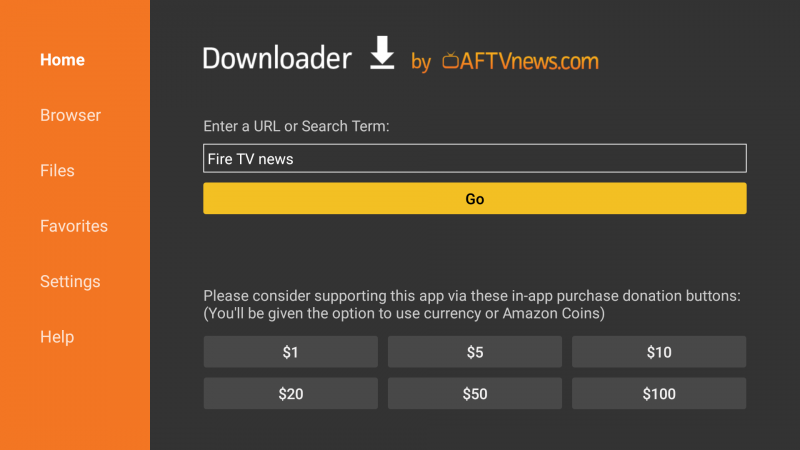

Tutorial Por DEX Out 2026
DOWNLOADER: como instalar?
O Downloader é um aplicativo essencial para quem usa TV Box (e Fire TV Stick com Fire OS). Ele funciona como um navegador e gerenciador de arquivos otimizado para a tela da TV, permitindo que você baixe e instale aplicativos de fora da loja oficial (arquivos APK) de forma muito simples, usando apenas um link direto ou um código numérico.
Basicamente, ele é a principal ponte para você instalar seus apps favoritos que não estão disponíveis na Google Play Store. Aqui está o passo a passo de como instalar e configurar tudo na sua TV Box:
1 Baixe o app Downloader
- Abra a Google Play Store na sua TV Box.
- Pesquise por Downloader (geralmente é o primeiro resultado, com um ícone laranja criado pela AFTVnews).
- Clique em Instalar.

2 Ative as Opções de Desenvolvedor
Para que o sistema deixe você instalar aplicativos de fora da loja, é preciso liberar o acesso de desenvolvedor:
- Vá nas Configurações (ícone de engrenagem) da sua TV Box.
- Acesse Preferências do Dispositivo (ou Sistema) e depois vá em Sobre.
- Role até o final e encontre a opção Número da Versão (ou Build / Versão do SO Android TV).
- Clique 7 vezes seguidas nessa opção, usando o controle remoto, até aparecer a mensagem “Você agora é um desenvolvedor!”.
3 Permita a instalação de Fontes Desconhecidas
Agora que você é um “desenvolvedor” para o sistema, precisa dar permissão específica para o Downloader instalar os aplicativos:
- Volte para a tela principal de Configurações.
- Vá em Apps e depois em Segurança e restrições (ou Acesso especial de apps > Instalar apps desconhecidos).
- Na lista que aparecer, procure pelo aplicativo Downloader.
- Ative a chave (ou marque como “Permitido”) ao lado dele.
4 Tudo pronto! 🚀
Agora é só abrir o aplicativo Downloader na sua TV Box, conceder a permissão para ele acessar os arquivos (quando ele pedir na primeira vez) e digitar o link ou o código do aplicativo que você deseja baixar. Ao final do download, a tela de instalação do seu novo app já abrirá automaticamente!
